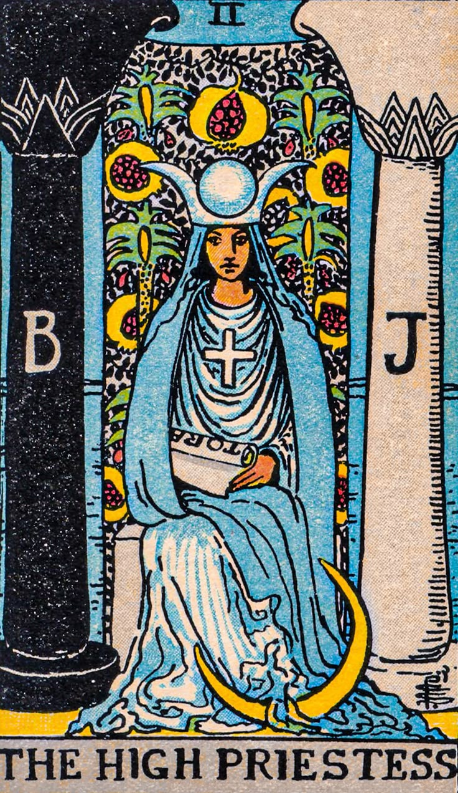

🃏 당신은 The High Priestes (여사제) 타입입니다!
키워드: 직관적 · 신비로움 · 내면 탐구자
성격 한 줄 요약: "모든 답은 내 안에 있다."
🌟 특징
- 혼자 있는 시간이 필요하고, 내면의 감정과 직관을 믿는 타입.
- 감정에 민감하고 사람의 진심을 꿰뚫어보는 눈이 있음.
- 겉으로는 조용하지만 속은 깊은 우물처럼 복잡하고 풍부함.
✅ 강점
- 타인의 심리를 잘 이해하고 공감력 뛰어남
- 위기 상황에서 차분하고 통찰력 있음
- 조용한 리더십
⚠️ 약점
- 지나치게 혼자만의 세계에 빠지거나 감정을 숨김
- 표현 부족으로 오해받을 수 있음
🧭 조언
당신의 직관은 날카롭지만, 때로는 마음을 열고 말로 표현하는 연습이 필요해요. 세상도 당신을 더 알고 싶어하니까요.